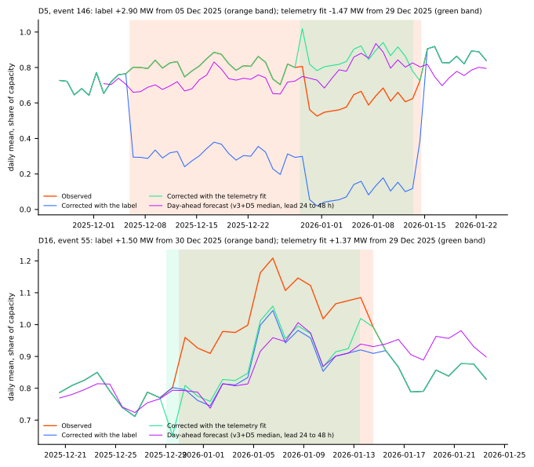
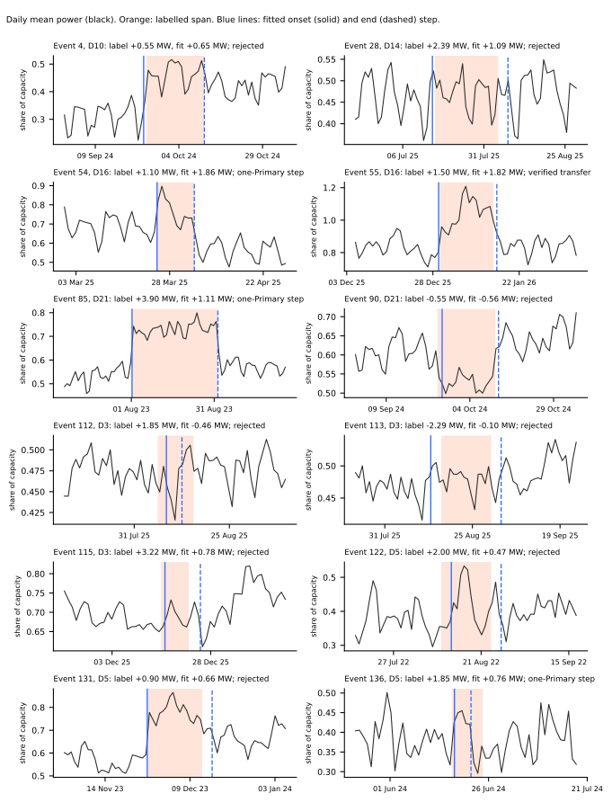
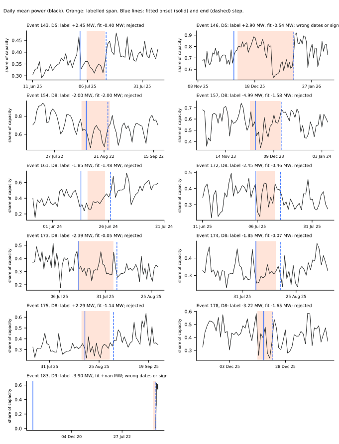
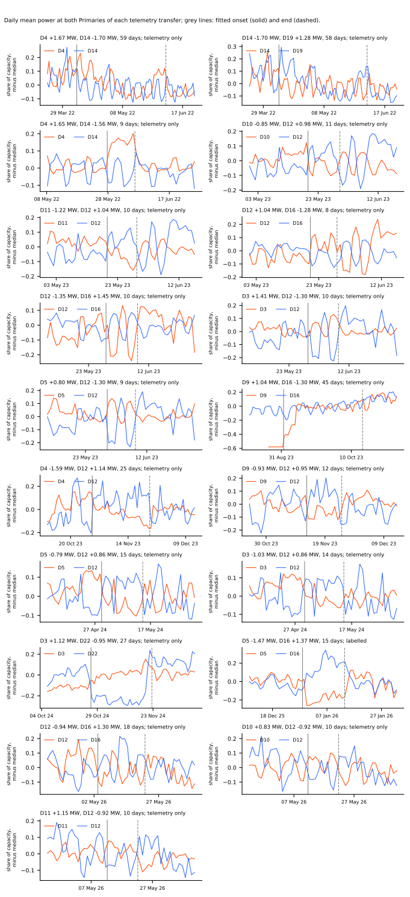
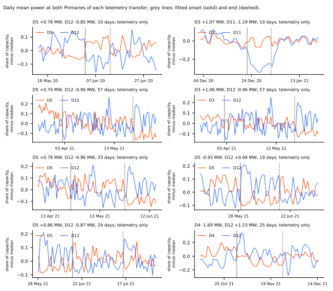

Which of NGED's 184 labelled load-shift events can be found in the telemetry?
We asked how many of NGED's labelled load-shift events (transfers of load between two Primaries, the primary substations of the electricity distribution network) show up as steps in the Primaries' own power readings. We treated each label as a candidate window only. We measured the step at the start and at the end of each event in the cleaned half-hourly power at the labelled Primary, required the step to exceed that Primary's own noise, and required a mirrored step at a second Primary. 1 of the 23 events of at least 7 days, and 1 of all 184 events, passed the pair rule below, and none passed the stricter 99th-percentile rule. The verdict word "supported" means the prediction held: the plan review predicted at most 6 of 23.
Take-home message: the labels cannot be relied on to build a corrected target. The correction removes a labelled event of the labelled sign, so for events 146, 143, and 85 the mismatch is in what the labels say. For most other long events the audit cannot tell a wrong label from a step too small to see. Event 146 shows the problem: the label says D5 carried 2.9 MW more from 2025-12-05 to 2026-01-14, the correction removed that amount, and the corrected power fell to about 0.3 of capacity (0.2 to 0.4), which D5 never reads. D5 shows no step on 2025-12-05. It drops by about 1.5 MW on 2025-12-29, mirroring D16, and recovers on about 2026-01-14. Experiments 578, 566, and 565 carry an erratum (last section).
Terms. D5, D16, and the other D-numbers are anonymised labels of Primaries. A "twin" is the same fitted neural network run with its lag inputs replaced (masked, or corrected with a label). The "follow ratio" is the median forecast with the observed lags minus the twin's median forecast, divided by the event's depth, so 0 means the lags did not move the forecast and 1 means they moved it by the whole depth. The "level share" is the share of the event's level that the forecast reproduces. The "absorbed share" is the share of the labelled depth that a refit absorbs from the event's rows. CRPS is the continuous ranked probability score.
What a rejection means
A rejected event is not proven absent, and a label that passes the check is not proven right in its depth. A 3-day step must exceed the 95th or 99th percentile of |step| at event-free dates, which is 0.07 to 0.45 (95th) and 0.10 to 0.56 (99th) of capacity depending on the Primary. A transfer of 1 to 2 MW at a 10 MW Primary is 10% to 20% of capacity, which weather and holidays also produce. So the check finds large steps only. NGED's logs are incomplete, so rows the check treats as event-free may still hold events.
How the check works
- Candidate window. The labelled onset and end, searched within 3 days each side.
- Step. For each of the 48 half-hours of the day, the median over the 3 days after the candidate time minus the median over the 3 days before it, averaged over the 48 half-hours (1 day or 6 hours for shorter events).
- Noise threshold (per Primary). A percentile of |step| on dates more than 4 days from every labelled onset and end at that Primary, and at least 5% of capacity. The strict rule asks each Primary alone to clear the 99th percentile. The pair rule asks both Primaries of a mirrored pair to clear the 95th percentile, because the same mirrored step at two Primaries on the same dates is much rarer by chance.
- A verified step pair has onset and end steps of opposite sign, within a factor of 2 in size.
- A verified transfer needs the same at the partner Primary, onsets and ends within 1 day, opposite signs, and load conserved to within 30% (the sum of signed MW under 30% of the larger).
- Sign convention. Depth is signed MW; positive means the Primary carries more power after the
onset. The counterfactual is
observed - depthover the inclusive span from onset to end. The stored correction of experiment 435 is the arrayf1.0, and experiments 566 and 578 applycorrected = observed + shiftwithshift = -f1.0. Inside an eventf1.0is the label depth over capacity, or a step measured from the telemetry where that step has the label's sign, is at least a set share of the label, and exceeds twice its pre-event bias (experiment 435's filters). For events 146, 143, 85, 154, and 161 the storedf1.0equals the label depth. For event 55 it is 0.229 of capacity (2.1 MW), measured, against a label of 1.5 MW. A unit check (e00580_check_sign.py) builds a synthetic event of +0.3 of capacity and confirms that the correction recovers the baseline exactly, that this experiment'scorrect()agrees, and that a label of the opposite sign doubles the event.
Results
Of the 23 labelled events of at least 7 days, 1 is confirmed. The counts, by label length:
| Label length | Events | Verified transfer | Telemetry shows a different transfer (wrong dates or sign) | Step at one Primary only | Not confirmed | Too short to check |
|---|---|---|---|---|---|---|
| at least 7 days | 23 | 1 | 1 | 3 | 18 | 0 |
| 1 to under 7 days | 96 | 0 | 3 | 11 | 82 | 0 |
| 6 hours to under 1 day | 46 | 0 | 0 | 0 | 46 | 0 |
| under 6 hours | 19 | 0 | 1 | 0 | 0 | 18 |
| all | 184 | 1 | 5 | 14 | 146 | 18 |
No pair passes the strict rule (99th percentile at both Primaries). The pair rule (95th percentile) finds 27 mirrored sustained pairs in the telemetry, 19 inside the labelled period (2022-03 to 2026-06) and 8 before it. 1 of the 27 matches a label. The hand check of the plots found 2 clear sustained transfers (D3 and D22 in October and November 2024; D5 and D16 in December 2025 and January 2026), 1 plausible, 1 artefact (the D9 record starts on 2023-09-01), and the rest without a clear step at both Primaries (many involve D12, whose readings oscillate day to day). Of the 2 clear transfers, 1 is unlabelled.
Every event of at least 7 days, with its fit. The fit is anchored to the label window (the peak step within 3 days of the labelled onset and end), so it can differ from the telemetry transfer in the table further below, as it does for event 146.
| Event | Primary | Label | Labelled dates | Fitted dates | Fitted depth | Class |
|---|---|---|---|---|---|---|
| 4 | D10 | +0.55 MW | 2024-09-24 to 2024-10-11 | 2024-09-23 to 2024-10-11 | +0.65 MW | not confirmed |
| 28 | D14 | +2.39 MW | 2025-07-15 to 2025-08-04 | 2025-07-15 to 2025-08-07 | +1.09 MW | not confirmed |
| 54 | D16 | +1.10 MW | 2025-03-24 to 2025-04-03 | 2025-03-24 to 2025-04-03 | +1.86 MW | step at one Primary only |
| 55 | D16 | +1.50 MW | 2025-12-30 to 2026-01-14 | 2025-12-29 to 2026-01-15 | +1.82 MW | verified transfer |
| 85 | D21 | +3.90 MW | 2023-08-01 to 2023-09-01 | 2023-08-01 to 2023-09-01 | +1.11 MW | step at one Primary only |
| 90 | D21 | -0.55 MW | 2024-09-24 to 2024-10-11 | 2024-09-25 to 2024-10-12 | -0.56 MW | not confirmed |
| 112 | D3 | +1.85 MW | 2025-08-06 to 2025-08-15 | 2025-08-08 to 2025-08-12 | -0.46 MW | not confirmed |
| 113 | D3 | -2.29 MW | 2025-08-16 to 2025-08-30 | 2025-08-13 to 2025-09-02 | -0.10 MW | not confirmed |
| 115 | D3 | +3.22 MW | 2025-12-15 to 2025-12-22 | 2025-12-16 to 2025-12-25 | +0.78 MW | not confirmed |
| 122 | D5 | +2.00 MW | 2022-08-09 to 2022-08-23 | 2022-08-12 to 2022-08-26 | +0.47 MW | not confirmed |
| 131 | D5 | +0.90 MW | 2023-11-26 to 2023-12-12 | 2023-11-26 to 2023-12-15 | +0.66 MW | not confirmed |
| 136 | D5 | +1.85 MW | 2024-06-16 to 2024-06-24 | 2024-06-17 to 2024-06-21 | +0.76 MW | step at one Primary only |
| 143 | D5 | +2.45 MW | 2025-07-05 to 2025-07-13 | 2025-07-02 to 2025-07-14 | -0.40 MW | not confirmed |
| 146 | D5 | +2.90 MW | 2025-12-05 to 2026-01-14 | 2025-12-03 to 2026-01-14 | -0.54 MW | wrong dates or sign |
| 154 | D8 | -2.00 MW | 2022-08-09 to 2022-08-23 | 2022-08-12 to 2022-08-22 | -2.00 MW | not confirmed |
| 157 | D8 | -4.99 MW | 2023-11-26 to 2023-12-12 | 2023-11-29 to 2023-12-12 | -1.58 MW | not confirmed |
| 161 | D8 | -1.85 MW | 2024-06-16 to 2024-06-24 | 2024-06-13 to 2024-06-26 | -1.48 MW | not confirmed |
| 172 | D8 | -2.45 MW | 2025-07-05 to 2025-07-13 | 2025-07-05 to 2025-07-16 | -0.46 MW | not confirmed |
| 173 | D8 | -2.39 MW | 2025-07-16 to 2025-08-04 | 2025-07-16 to 2025-08-06 | -0.05 MW | not confirmed |
| 174 | D8 | -1.85 MW | 2025-08-06 to 2025-08-15 | 2025-08-06 to 2025-08-17 | -0.07 MW | not confirmed |
| 175 | D8 | +2.29 MW | 2025-08-16 to 2025-08-30 | 2025-08-17 to 2025-09-01 | -1.14 MW | not confirmed |
| 178 | D8 | -3.22 MW | 2025-12-15 to 2025-12-22 | 2025-12-18 to 2025-12-22 | -1.65 MW | not confirmed |
| 183 | D9 | -3.90 MW | 2023-08-01 to 2023-09-01 | no data | no data | not confirmed |
Why the long events are not confirmed. Of the 146 events not confirmed, 102 have an onset step below the 99th-percentile noise threshold, 100 an end step below it, and 97 both. The D3 and D8 events (112 to 115 and 172 to 178) show no step at D3, and at D8 events 154 and 161 show steps of -2.00 and -1.48 MW that match the label but sit below D8's noise threshold (about 2.4 MW), so they count as support for those labels, not against them. Event 85 (D21, +3.9 MW) shows a step of about 1.1 MW with no partner, because D9 has no telemetry before 2023-09-01, so its label depth is about 3.5 times the step.
Event 55 is confirmed, and event 146 is its mirror with the wrong sign and dates. The figure shows both before and after correction, against the day-ahead forecast.

D5 reads 0.8 of capacity, drops to 0.55 on 2025-12-29, and returns to 0.9 on about 2026-01-14. The label-corrected series (blue, top) removes +2.9 MW from 2025-12-05 and falls to about 0.3, then to about 0.0 once the true drop adds to it. The telemetry fit (transfer 23 below) is -1.47 MW at D5 from 2025-12-29. Event 143 (D5, +2.45 MW, 2025-07-05 to 2025-07-13) shows no step, and its label-corrected power has a mean of -0.09 of capacity and is below zero in 63% of half-hours, at a demand Primary.
Hand check of every event of at least 7 days. Each panel shows the daily mean at the labelled Primary, the label span shaded, and the fitted onset and end marked.


The telemetry transfers, with the labels left out.
| Transfer | Primaries | Fitted dates | Length (days) | Fitted depth at each | Hand check |
|---|---|---|---|---|---|
| 8 | D4 and D14 | 2022-04-07 to 2022-06-05 | 59 | +1.67 and -1.70 MW | not confirmed (no clear step at both Primaries) |
| 9 | D14 and D19 | 2022-04-08 to 2022-06-05 | 58 | -1.70 and +1.28 MW | not confirmed (no clear step at both Primaries) |
| 10 | D4 and D14 | 2022-05-27 to 2022-06-05 | 9 | +1.65 and -1.56 MW | plausible (D4 steps, D14 unclear) |
| 11 | D10 and D12 | 2023-05-19 to 2023-05-30 | 11 | -0.85 and +0.98 MW | not confirmed (no clear step at both Primaries) |
| 12 | D11 and D12 | 2023-05-19 to 2023-05-29 | 10 | -1.22 and +1.04 MW | not confirmed (no clear step at both Primaries) |
| 13 | D12 and D16 | 2023-05-20 to 2023-05-28 | 8 | +1.04 and -1.28 MW | not confirmed (no clear step at both Primaries) |
| 14 | D12 and D16 | 2023-05-28 to 2023-06-08 | 10 | -1.35 and +1.45 MW | not confirmed (no clear step at both Primaries) |
| 15 | D3 and D12 | 2023-05-29 to 2023-06-08 | 10 | +1.41 and -1.30 MW | not confirmed (no clear step at both Primaries) |
| 16 | D5 and D12 | 2023-05-30 to 2023-06-08 | 9 | +0.80 and -1.30 MW | not confirmed (no clear step at both Primaries) |
| 17 | D9 and D16 | 2023-09-01 to 2023-10-16 | 45 | +1.04 and -1.30 MW | data artefact (D9 record starts) |
| 18 | D4 and D12 | 2023-10-29 to 2023-11-23 | 25 | -1.59 and +1.14 MW | not confirmed (no clear step at both Primaries) |
| 19 | D9 and D12 | 2023-11-12 to 2023-11-24 | 12 | -0.93 and +0.95 MW | not confirmed (no clear step at both Primaries) |
| 20 | D5 and D12 | 2024-04-29 to 2024-05-14 | 15 | -0.79 and +0.86 MW | not confirmed (no clear step at both Primaries) |
| 21 | D3 and D12 | 2024-04-30 to 2024-05-14 | 14 | -1.03 and +0.86 MW | not confirmed (no clear step at both Primaries) |
| 22 | D3 and D22 | 2024-10-26 to 2024-11-22 | 27 | +1.12 and -0.95 MW | clear |
| 23 | D5 and D16 | 2025-12-29 to 2026-01-13 | 15 | -1.47 and +1.37 MW | clear |
| 24 | D12 and D16 | 2026-05-03 to 2026-05-21 | 18 | -0.94 and +1.30 MW | not confirmed (no clear step at both Primaries) |
| 25 | D10 and D12 | 2026-05-11 to 2026-05-21 | 10 | +0.83 and -0.92 MW | not confirmed (no clear step at both Primaries) |
| 26 | D11 and D12 | 2026-05-12 to 2026-05-22 | 10 | +1.15 and -0.92 MW | not confirmed (no clear step at both Primaries) |


Is the mismatch in the code or in the labels?
For events 146, 143, and 85 the stored correction is the label depth, and it contradicts the telemetry. The code removes the labelled depth with the labelled sign (unit check above), so these corrected series are wrong because of the label's span, sign, or size. A label-corrected power below zero at a demand Primary (event 143) is a symptom of a label for a step that is not in the data. For the other long events the audit cannot say whether the label is wrong or the step is too small to see, and the measured-step branch of experiment 435 was not inspected event by event.
What changes in earlier results
Recomputed with the confirmed pair (cheap, from stored forecasts; one transfer, so descriptive). The table shows the follow ratio of the v3+D5 neural network (median with observed lags minus the median of the twin, over the fitted depth, 24 to 120 h lead, positive means towards the event) on the confirmed D5 and D16 pair, at the fitted dates.
| Primary | Phase | Twin | Follow ratio | Half-hours |
|---|---|---|---|---|
| D16 | whole event | lags masked | 0.16 | 2844 |
| D16 | after day 4 | lags masked | 0.21 | 2076 |
| D16 | 7 days after the end | lags masked | 0.40 | 1344 |
| D5 | whole event | lags masked | 0.04 | 2964 |
| D5 | after day 4 | lags masked | 0.09 | 2196 |
| D5 | 7 days after the end | lags masked | 0.10 | 1344 |
At D16 the follow ratio against the corrected-lag twin is 0.17, 0.24, and 0.36 in the same three phases, so the twin choice matters little there. At D5 the follow is small. The level share is noisy on one event: 0.27 at D5 and -0.14 at D16 against the telemetry counterfactual, against 1.04 for event 146 against the label counterfactual, which is the figure the label error produced. Each ratio is one event, so no interval is shown.
Not recomputed. The real-event absorbed shares of experiments 565 and 566 (74 month-event pairs) need one refit per pair, so they were not repeated. Only 2 of the 41 (fold month, labelled event) overlaps in the five fold months of experiment 578 belong to the confirmed event 55, so the shares of experiments 565 and 566 are mostly shares of a labelled depth that the telemetry does not confirm.
The injected event bank
The bank (injected_event_bank.parquet, 358 designs; e00580_bank.py) follows the plan review:
mirrored transfers between connected Primaries from experiment 400's list (excluding D15 and D18),
15%, 30%, and 50% of the smaller capacity, lengths of 3, 7, 15, and 30 days, an onset at 00:00 or at
12:00 UTC, 3 start dates in each of the five fold months, one event per design. The donor changes by
a depth and the recipient gains the same MW. inject() of experiment 402 draws depths, lengths, and
dates at random, so the bank fixes the design in its own module and keeps the load-conserving
convention of inject(). A known-answer check confirms that correct() returns the original power
and that the two depths sum to zero MW. Use the bank twice: in the lags only (forecast-time
following) and in the lags and the fine-tune targets (absorption).
ERRATUM for experiments 578, 566, and 565
- Experiment 578: the follow ratios, level shares, and normal-running-arrangement (NRA) coverage for the labelled events other than event 55, including events 115, 143, 146, 28, 112, and 113, used a corrected power that the telemetry does not confirm. Do not quote them. For events 146 and 143 the corrected power contradicts the telemetry. The headline "whole event 0.087, after day 4 0.163" and "the corrected-lag forecast still reproduces a median 0.84 of the event's level" are not supported. The event 55 numbers stand, with its stored correction measured at 2.1 MW against a telemetry fit of 1.4 to 1.8 MW. The verdict "not supported" rested on a prediction (P1) tested over a set that the audit reduces to one event.
- Experiment 566: the real-event absorbed shares (0.026, 0.040, 0.014 of the labelled depth) divide by labelled depths that the telemetry mostly does not confirm. Treat them as unproven. The CRPS, coverage, and lag-encoder results do not depend on the labels and stand.
- Experiment 565: the real-event absorbed share (74 pairs) has the same problem; the other results stand.
Checks
- Median minus mean forecast, per site: not applicable (no forecast is fitted).
- Error of the mean or median beside every quantile contrast: not applicable.
- Triggers: none fired (no control, contrast, or nested arm).
- Standing rule on weather inputs: not applicable; no weather input enters.
- Interval statistics: none; the tables are counts. No bootstrap or Bonferroni count applies.
- Unlogged events: NGED's logs may miss events, so rows with no labelled event may still hold events.
- Lead range: not applicable (no forecast is scored). NGED care about 1 to 10 days.
What the next experiment should answer
Does a lag neural network that reads a robust multi-week summary of its lags keep its gain and stop following injected long events? Run it on the injected event bank, and ask NGED to check the labels for events 146, 143, and 85 and the D3, D5, and D8 events.